CUAL ES EL COSTO AMBIENTAL?
la generación de videos con ia genera emisiones de carbono debido a la energía necesaria para entrenar y ejecutar sus modelos en centros de datos.
¿Qué costo tiene generar todo esto?
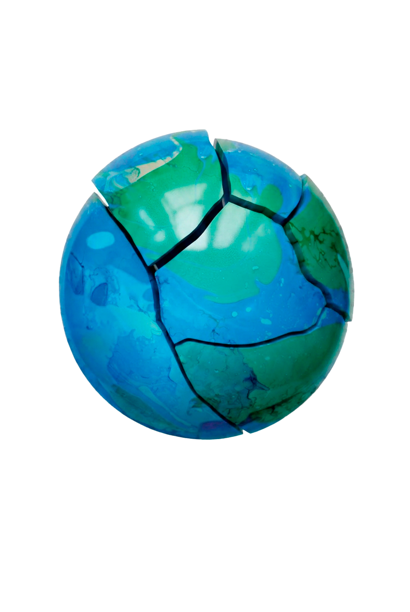
La producción de videos con IA genera una importante huella hídrica debido al agua utilizada en las centrales eléctricas para generar y refrigerar la energía.
Fueron consumidos
para la generación en data centers
Hacé clic en la imagen para interactuar
Los centros de datos necesitan sistemas de refrigeración los cuales utilizan agua para mantener sus servidores funcionando correctamente.
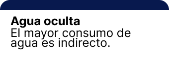
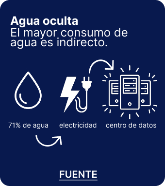
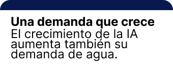
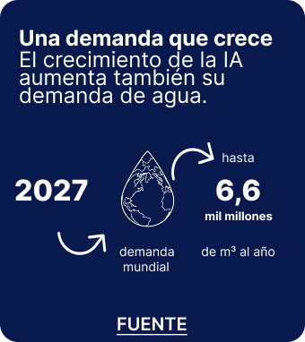
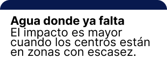
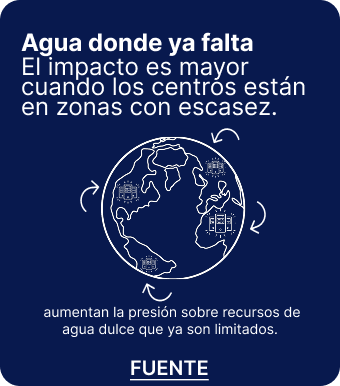
la generación de videos con ia genera emisiones de carbono debido a la energía necesaria para entrenar y ejecutar sus modelos en centros de datos.
Se utilizan cientos toneladas de Co2 para entrenar grandes modelos de lenguaje
Selecciona una opción para ver el impacto
1 Punto = 1 Árbol necesario por año.
Los centros de datos requieren grandes cantidades de energía para mantener sus servidores funcionando.
Si se pudieran pesar esas emisiones… ¿Cuántas ballenas azules necesitaríamos para alcanzar ese peso?
1 Ballena azul = 150 toneladas
1.200.000
Ballenas
1.000
Ballenas
10.000
Ballenas
Huella de CO₂ en 2024
1.200.000 Ballenas azules
Si el uso de IA para generar videos continúa creciendo, su impacto ambiental podría aumentar considerablemente hacia 2030.
2,5 millones de toneladas de residuos electrónicos podrían generarse anualmente para 2030.
Te invitamos a participar de este quiz:
 A escala global
A escala global